Costa Cálida · Mar Menor
Inmuebles en venta en Los Alcázares
Pisos nuevos junto a las aguas tranquilas y cálidas del Mar Menor y villas con piscina privada junto a La Serena Golf. Estos son los inmuebles que vendemos hoy en Los Alcázares, con una breve guía de las zonas y lo que cuesta de verdad comprar.
- 23inmuebles en venta en Los Alcázares
- desde 265.000 €un piso nuevo
- unos 30 minal aeropuerto de la Región de Murcia
- Mar Menoruna laguna salada tranquila
En venta ahora
Inmuebles en venta en Los Alcázares
Pisos nuevos de 2 o 3 dormitorios, muchos a menos de un kilómetro de la playa, y villas de 3 dormitorios con piscina privada, varias junto a La Serena Golf. Los precios son los de hoy; pregúntenos por la disponibilidad actual.
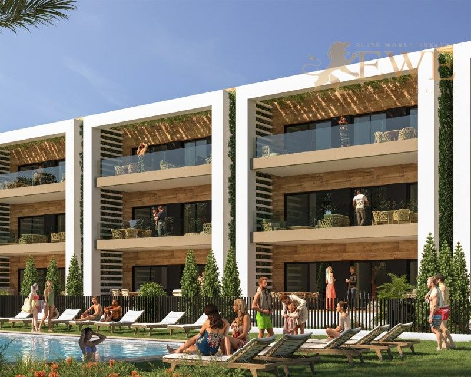
Entrega sept 2027Los Alcázares
Attractive flat close to the beach in Los Alcazares
265.000 €
2 dormitorios · 2 baños · 60 m²Ref. EWE3312
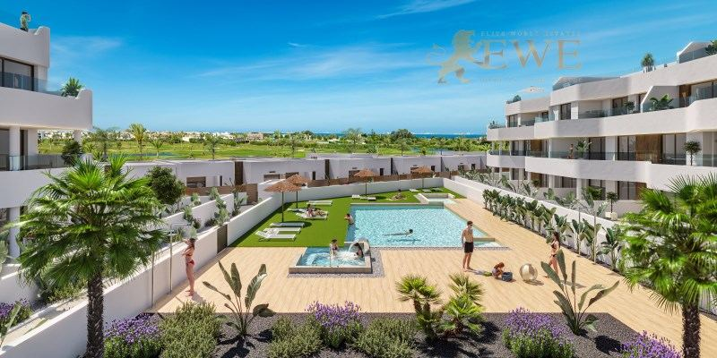
Entrega desde fin 2026Los Alcázares
Ready-made apartment next to the golf course in Los Alcázares
265.000 €
70 m²Ref. EWE3725
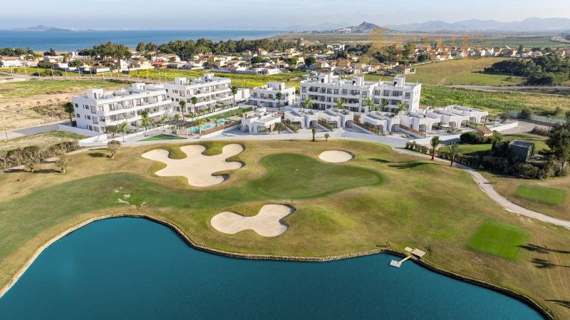
Entrega May 2028Los Alcázares
New apartments 1 km from the beach in Los Alcázares
269.900 €
2 dormitorios · 2 baños · 78 m²Ref. EWE3691
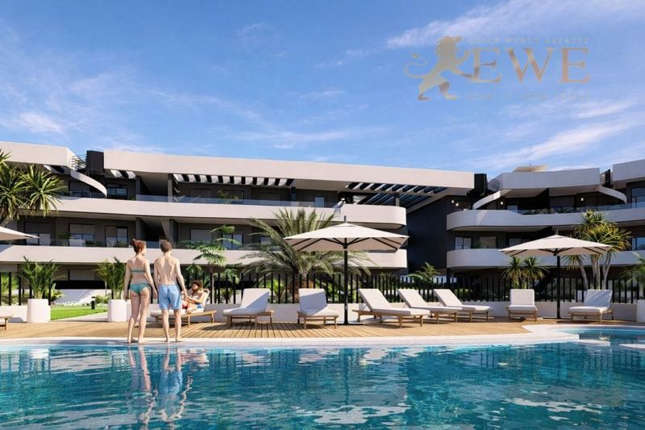
Entrega fin 2027Los Alcázares
Elegant apartments by the golf course in Los Alcázares
278.900 €
2 dormitorios · 2 baños · 60 m²Ref. EWE3699
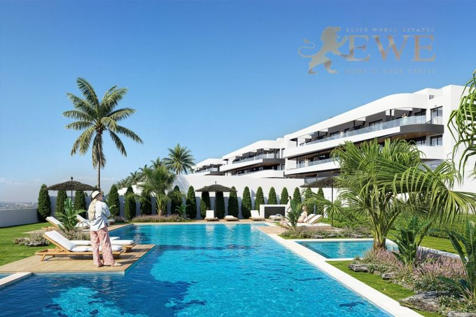
Entrega desde Mar 2027Los Alcázares
Exclusive apartments at La Serena Golf in Los Alcázares
279.000 €
2 dormitorios · 2 baños · 84 m²Ref. EWE3727
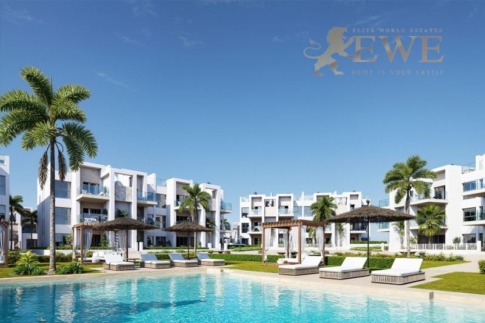
Entrega fin 2027Los Alcázares
Exclusive apartments 300 m from the sea in Los Alcázares
309.000 €
2 dormitorios · 2 baños · 71 m²Ref. EWE3697
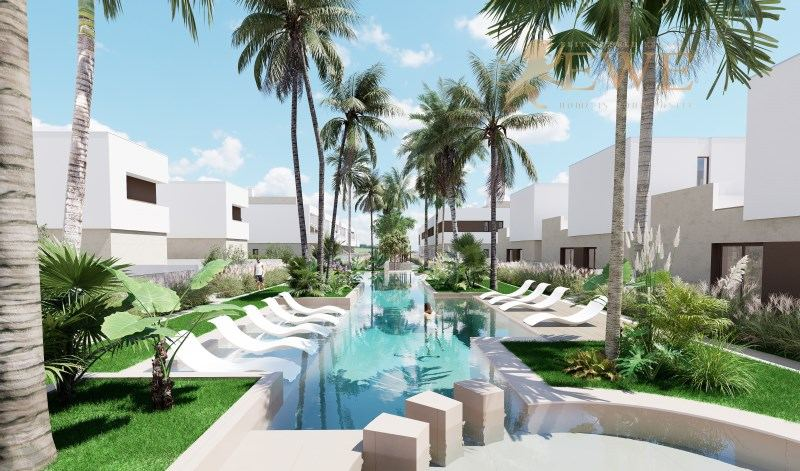
Los Alcázares
New apartment with large terrace 2 km from the beach in Los Alcázares
320.000 €
3 dormitorios · 2 baños · 100 m²Ref. EWE3475
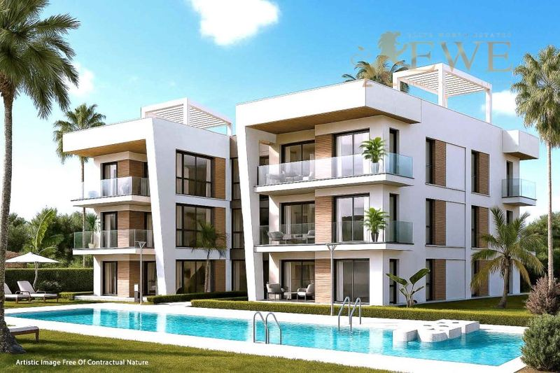
Los Alcázares
Apartment with a large terrace 800 metres from the beach in Los Alcázares
321.500 €
2 dormitorios · 2 baños · 87 m²Ref. EWE3620
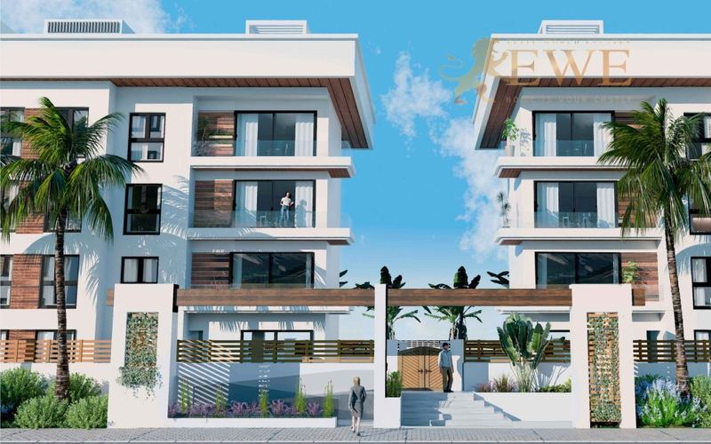
Los Alcázares
Spacious apartment 800 metres from the beach in Los Alcázares
397.000 €
3 dormitorios · 2 baños · 89 m²Ref. EWE3621
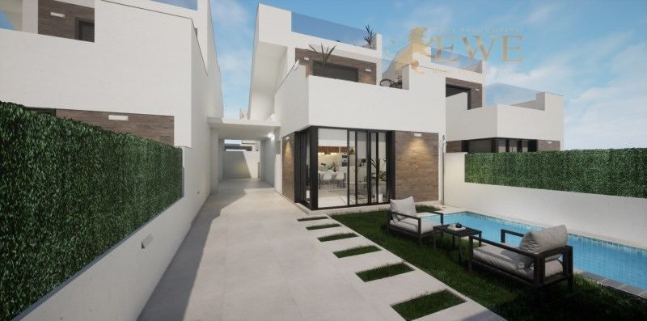
Los Alcázares
Finished villa with pool 750 m from the beach in Los Alcazares
419.900 €
3 dormitorios · 2 baños · 101 m²Ref. EWE3354
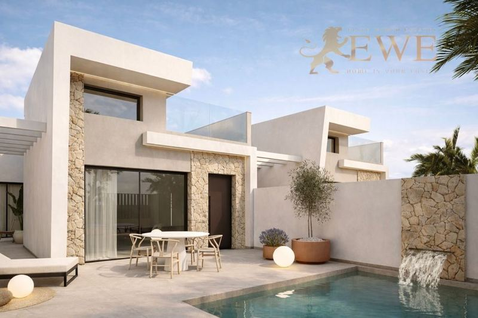
Entrega fin 2027Los Alcázares
Elegant villa with private pool in Los Alcázares
453.000 €
3 dormitorios · 2 baños · 112 m²Ref. EWE3712
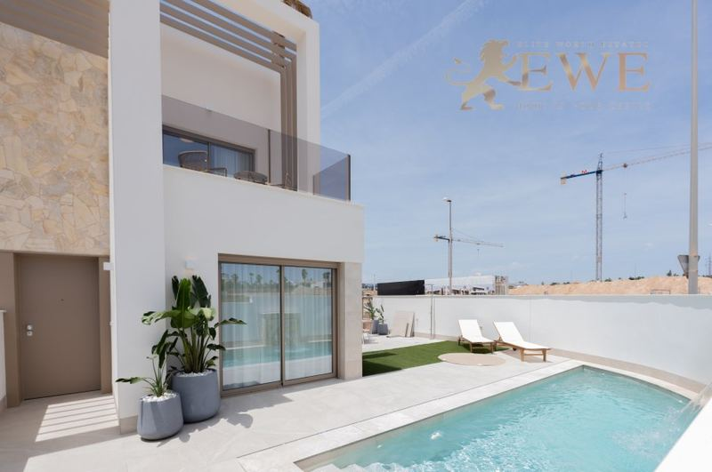
Entrega dic 2027Los Alcázares
Villa by the Golf Course and 1 km from the Sea in Los Alcázares
475.000 €
3 dormitorios · 4 baños · 100 m²Ref. EWE3763
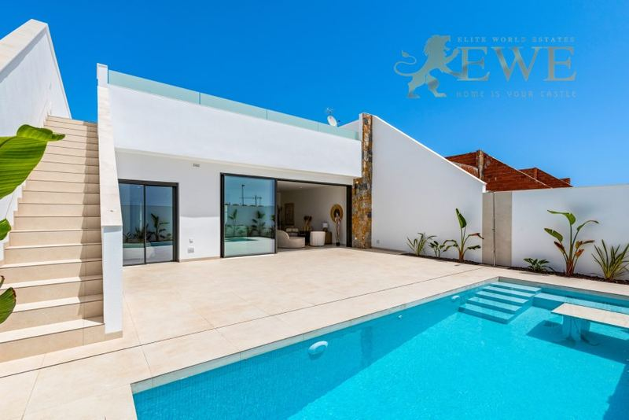
Los Alcázares
Elegant villa with private pool near the golf course in Los Alcázares
499.900 €
3 dormitorios · 2 baños · 96 m²Ref. EWE3720
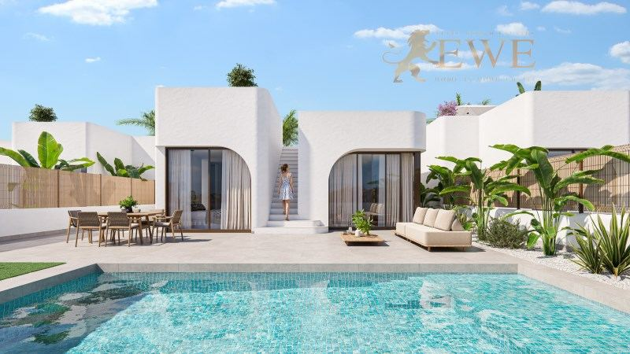
Entrega May 2028Los Alcázares
Exclusive Villas at La Serena Golf Just 1 km from the Beach
539.900 €
3 dormitorios · 2 baños · 115 m²Ref. EWE3692
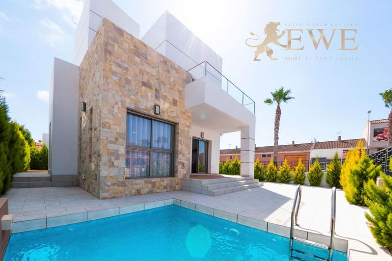
Los Alcázares
Wonderful villa in Los Alcázare
544.841 €
3 dormitorios · 3 baños · 146 m²Ref. EWE1768
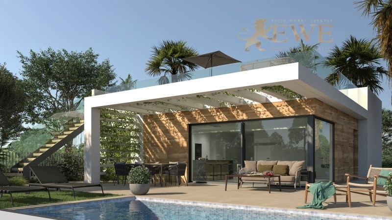
Los Alcázares
Mediterranean house with pool in Los Alcazares
549.000 €
3 dormitorios · 3 baños · 228 m²Ref. EWE3326
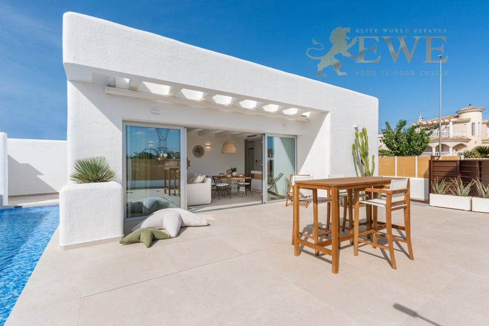
Los Alcázares
Fantastic Balinese style villa in Los Alcazares
550.000 €
3 dormitorios · 2 baños · 115 m²Ref. EWE2285
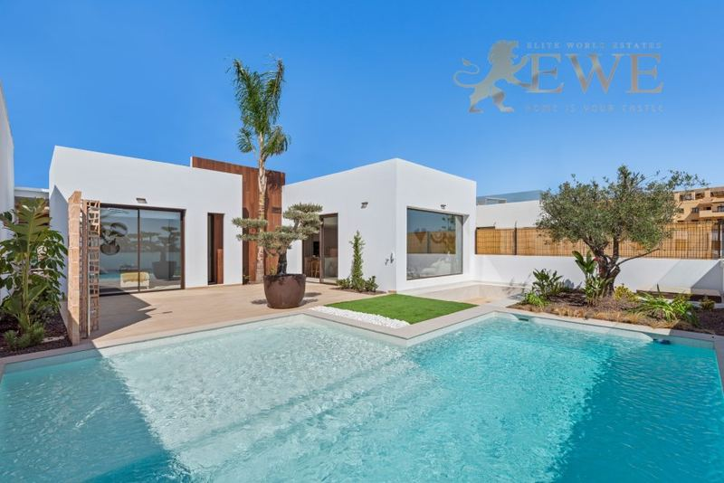
Los Alcázares
Charming villa with swimming pool on the first line of the Los Alcázares golf course
555.000 €
3 dormitorios · 2 baños · 108 m²Ref. EWE2286
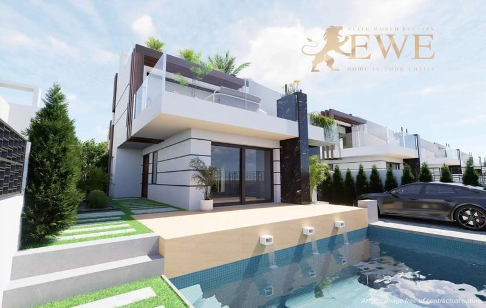
Entrega sept 2027Los Alcázares
Modern villa in Los Alcázares
587.800 €
3 dormitorios · 3 baños · 121 m²Ref. EWE1313
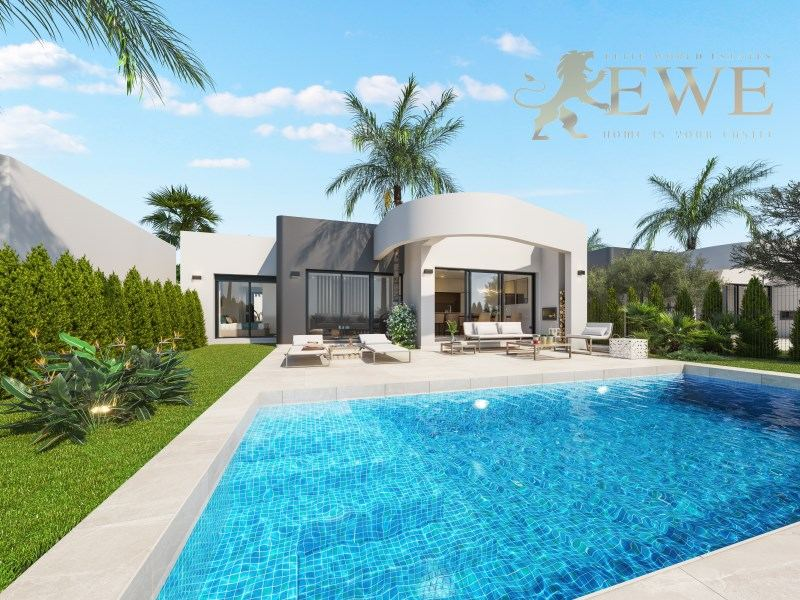
Entrega Mar 2027Los Alcázares
Exclusive apartments at La Serena Golf in Los Alcázares
599.000 €
3 dormitorios · 3 baños · 252 m²Ref. EWE3728
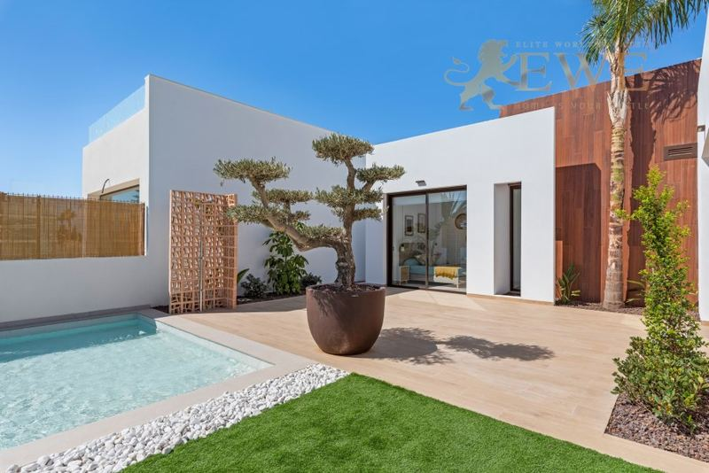
Entrega fin 2026Los Alcázares
Complete villa overlooking the Los Alcázares golf course
619.000 €
3 dormitorios · 2 baños · 70 m²Ref. EWE3726
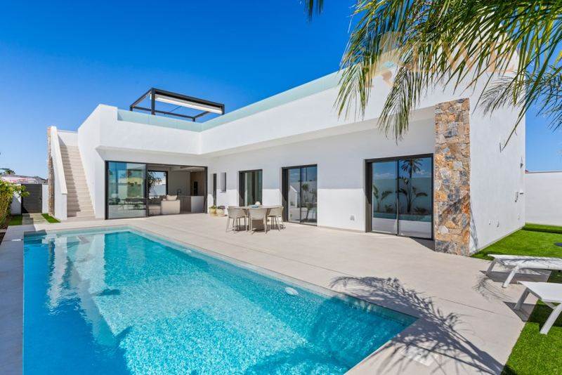
Los Alcázares
Elegant villa with private pool near the golf course in Los Alcázares
689.900 €
3 dormitorios · 3 baños · 110 m²Ref. EWE3618
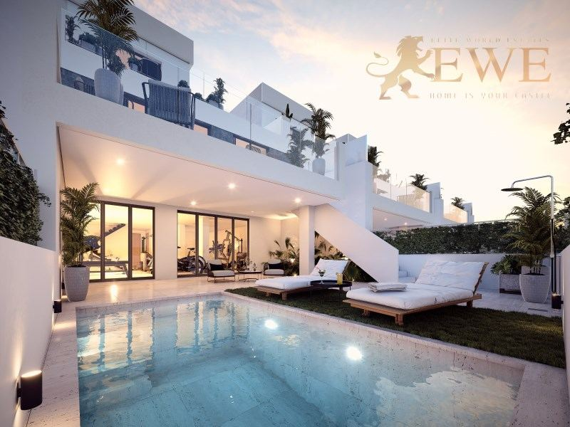
Los Alcázares
Terraced villa with swimming pool near La Serena Golf course in Los Alcázares
720.000 €
3 dormitorios · 4 baños · 110 m²Ref. EWE3585
La ciudad
Vivir en Los Alcázares
Los Alcázares es una localidad costera de unos 17.000 habitantes en la Región de Murcia, a orillas del Mar Menor. El Mar Menor es una gran laguna salada separada del Mediterráneo por una estrecha franja de tierra, La Manga. Sus aguas son poco profundas, tranquilas y cálidas buena parte del año, por eso gustan tanto a las familias y para la vela y otros deportes acuáticos.
La localidad tiene un largo paseo marítimo con playas, pequeños embarcaderos y cafeterías, y un ritmo relajado. La Serena Golf está en las afueras, y otros campos de golf, como los de Roda, están a pocos minutos.
Los precios son más bajos que en la mayor parte de la Costa Blanca y la Costa del Sol, así que se consigue una vivienda nueva con piscina por menos dinero. El aeropuerto de la Región de Murcia está a unos 30 minutos en coche, el de Alicante a una hora, y Cartagena y Murcia capital a entre 25 y 35 minutos.
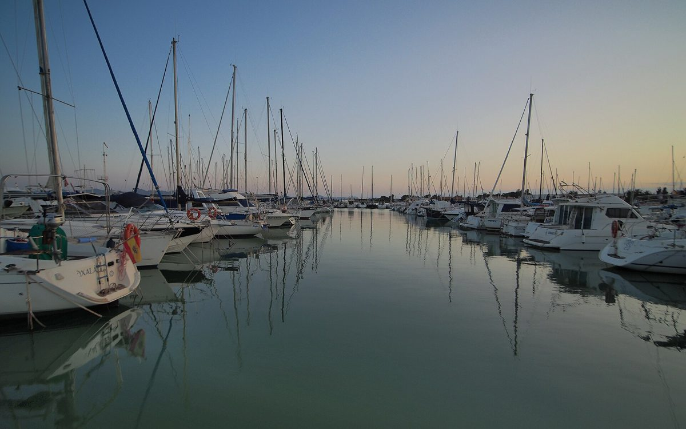
Dónde comprar
Las principales zonas de Los Alcázares
Paseo marítimo y centro
El paseo, las playas y los embarcaderos del Mar Menor, con tiendas y restaurantes a pie. Pisos cerca del agua.
La Serena Golf
Un resort de golf en las afueras, a 1 km de la playa. Villas nuevas con piscina privada y pisos junto al campo.
Zonas residenciales del interior
Calles más tranquilas a 1 o 2 km del mar, con residenciales nuevos y villas, a menudo con más espacio por el mismo dinero.
Alrededor del Mar Menor
San Javier, Santiago de la Ribera y La Manga, muy cerca, con más playas, clubes náuticos y campos de golf.
Presupuesto
Cuánto cuesta comprar en Los Alcázares
Al precio se suman impuestos y gastos. Para un piso nuevo de 279.000 €, por ejemplo, son 27.900 € de IVA y 4.185 € de AJD, más notaría, registro y abogado. En la segunda mano los impuestos son otros, así que pídanos siempre la cifra exacta de la vivienda que le guste.
| Obra nueva | 10 % IVA + 1,5 % AJD |
|---|---|
| Segunda mano | 7,75 % ITP |
| Notaría, registro, abogado | aprox. 1,5–2,5 % del precio |
| Cada año | IBI y gastos de comunidad, según la vivienda |
Preguntas
Comprar vivienda en Los Alcázares: preguntas y respuestas
¿Cuánto cuesta una vivienda en Los Alcázares?
Nuestros pisos nuevos en Los Alcázares empiezan hoy en 265.000 €, y la mayoría de 2 o 3 dormitorios cuestan entre 265.000 € y 400.000 €. Las villas con piscina privada cuestan de unos 420.000 € a 720.000 €, muchas cerca de La Serena Golf.
¿Cómo es el Mar Menor?
El Mar Menor es una gran laguna salada junto al Mediterráneo. Sus aguas son poco profundas, tranquilas y normalmente más cálidas que el mar abierto, así que son ideales para niños, para bañarse casi todo el año y para deportes como la vela o el paddle surf.
¿Hay riesgo de inundación en Los Alcázares?
Algunas partes de la localidad se inundaron en las fuertes tormentas de otoño de los últimos años. Antes de comprar, consulte los mapas oficiales de inundabilidad de la parcela concreta y pregunte por el drenaje y el seguro. Le ayudamos con estas comprobaciones.
¿A qué distancia está Los Alcázares del aeropuerto?
El aeropuerto de la Región de Murcia, en Corvera, está a unos 30 minutos en coche, y el de Alicante-Elche a una hora.
¿Qué gastos hay además del precio?
En la Región de Murcia se paga un 10 % de IVA y un 1,5 % de AJD en obra nueva, y un 7,75 % de ITP en segunda mano. Notaría, registro y abogado suman alrededor de un 1,5–2,5 %.
¿Pueden comprar vivienda los extranjeros en Los Alcázares?
Sí. Cualquier persona puede comprar una vivienda en España. Necesita un NIE y normalmente una cuenta bancaria española, y le ayudamos con las dos cosas. Consulte nuestra guía del NIE.


¿Busca casa en Los Alcázares?
Cuéntenos su presupuesto y lo que necesita. Respondemos en un día laborable, en español, inglés, alemán o polaco.